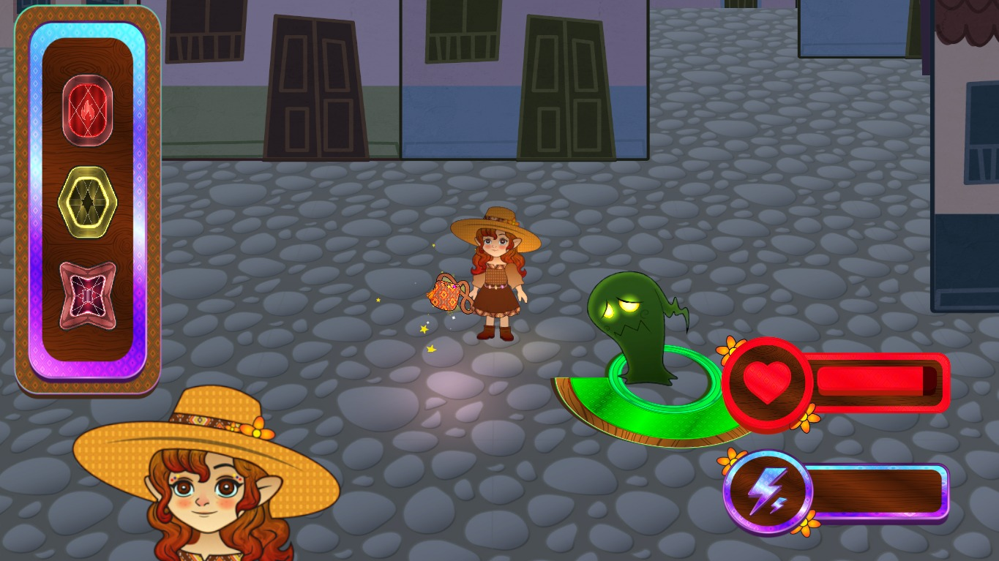

Baiquimu

{kind=link}
{kind=link}
{kind=link}
{kind=link}
Baiquimu es un juego de acción 2.5D en el que una pequeña brujita llega al misterioso pueblo de Bayquimu, donde los fantasmas han sembrado el miedo y obligado a sus habitantes a esconderse en sus casas. Decidida a ayudarlos, la brujita usa su magia para proteger el pueblo; sin embargo, sus poderes son limitados. El jugador deberá ser estratégico, eligiendo cuidadosamente qué zonas defender, ya que no es posible cubrir todo el territorio al mismo tiempo.
Videojuego desarrollado con Unity 6.3. Assets propios diseñados en Krita. Desarrollo activo.
Mis Roles:
- Project Manager
- Scrum Master
- 2D Bone Animation Artist + Rigger
- NPCs & Background assets Artist + Developer
- Level Designer
Tareas Específicas:
- Diseño de NPCs enemigos.
- Animación y riggeo de NPCs y protagonista.
- Diseño e implementación final de assets del escenario.
- Diseño e implementación final de texturas.
- Desarrollo implementación 2.5D / Billboard.
- Implementación efectos de postprocesamiento.
- Diseño y layout de nivel.